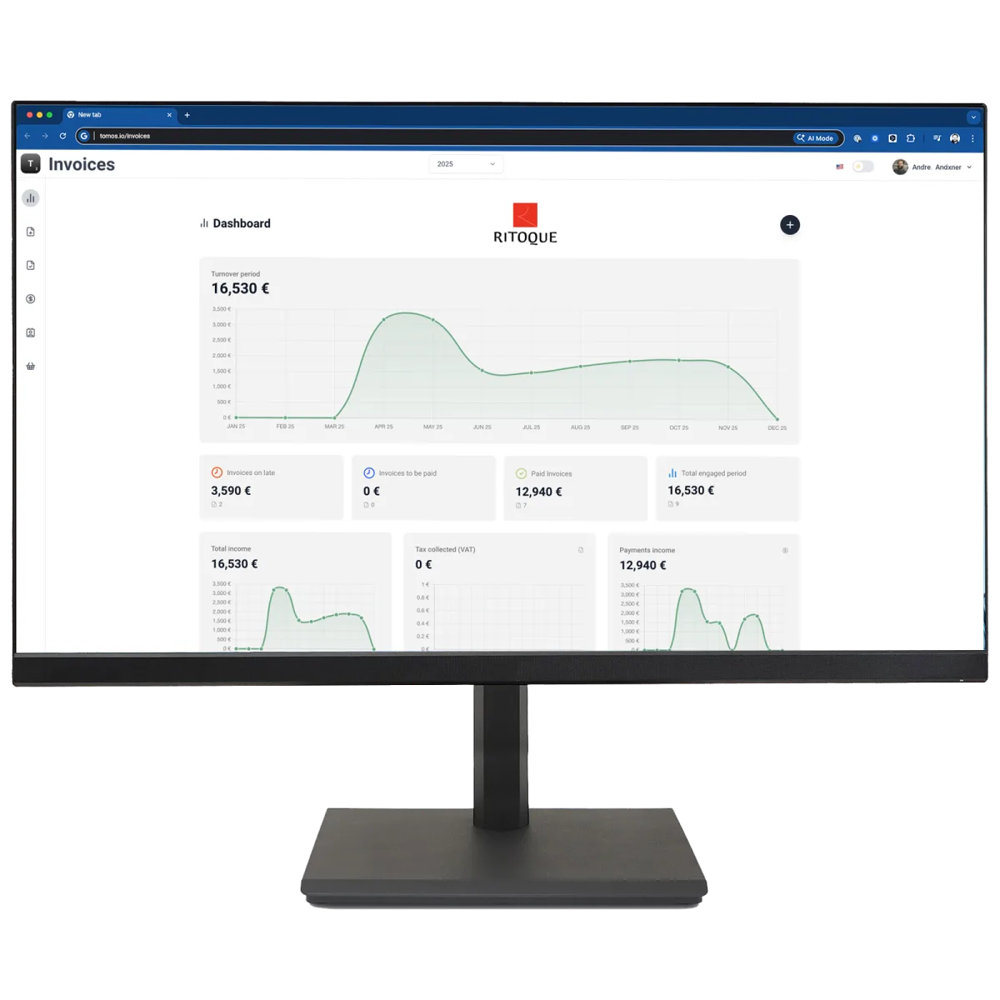

T2 Invoicing lets your clients create, send, and track professional invoices with full e-invoice compliance — white-labeled under your own brand.
Create and send branded invoices in seconds, from any device.
Meets EU e-invoicing standards, ready for upcoming regulatory mandates.
See who's paid, who's late, and send automatic reminders.
Your clients log in to a portal that carries your name, your logo, your colors.
Built for cross-border SMEs — invoice in the currency your clients need.
Export clean data your clients' bookkeeping tools can ingest directly.

T2 Invoicing isn't a mockup. It's the engine behind a real, live SaaS built by a TOMOS partner in Mauritius.
An accounting professional in Mauritius runs facture.mu — invoicing software for local SMEs — entirely on TOMOS T2, under his own brand and pricing.
Become a TOMOS partner and put T2 Invoicing under your own brand.
Become a partner →